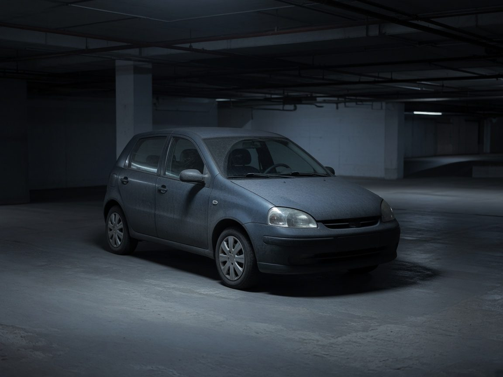

고독사 차량 특수청소
카리셋 고독사 차량 특수청소 사례입니다. 발견이 늦어진 준중형 세단으로, 시트와 내장재 깊숙이 오염이 배어 일반 세차로는 악취가 남는 상태였습니다.
이동 후 시트·바닥·내장재의 오염 깊이를 확인하고 분해 세척과 탈취를 진행했습니다. 복원 비용과 잔존 가치를 함께 본 뒤, 재사용보다 고인명의 폐차 말소가 맞다고 안내했습니다.
말소에 필요한 서류와 순서를 설명했고, 성함·차량번호는 후기에 올리지 않았습니다.
- 차량 상태
- 준중형 세단. 발견이 늦어 실내 오염이 깊고, 일반 세차로는 악취가 남는 상태였습니다.
- 오염 범위
- 시트 폼, 바닥, 내장재 안쪽. 복원보다 처분이 유리한 수준으로 판단했습니다.
- 작업 과정
- 이동 → 오염 깊이 확인 → 특수청소·탈취 → 복원/폐차 비교 안내 → 말소 서류 순서 안내
- 사용 장비
- 방호 장비, 특수 세정 약품, 오존 탈취기
- 작업 결과
- 내부 오염을 처리한 뒤 폐차 말소 방향을 안내했습니다.
- 개인정보 보호
- 유가족 성함·얼굴·차량번호는 공개하지 않습니다.
- 고독사 차량 특수청소
- 차량 악취제거
- 고인명의 폐차 말소 안내